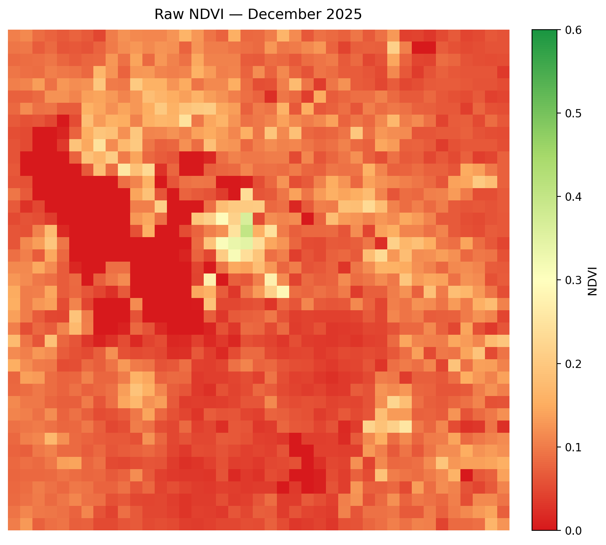
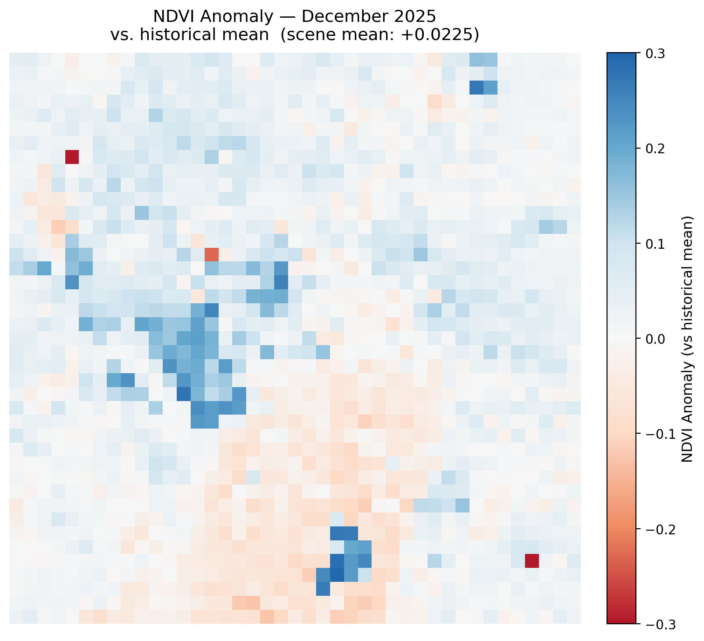
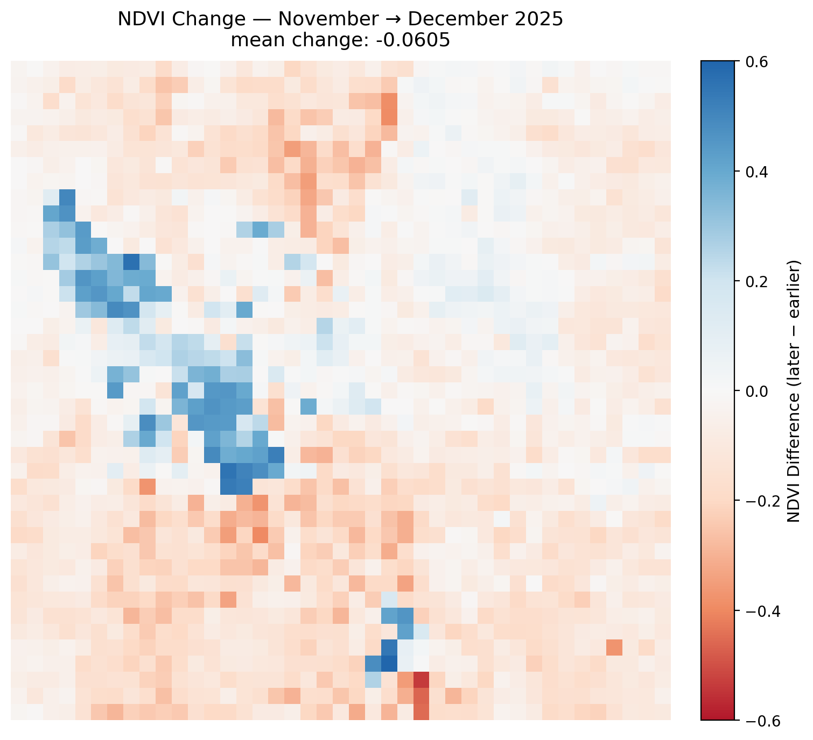
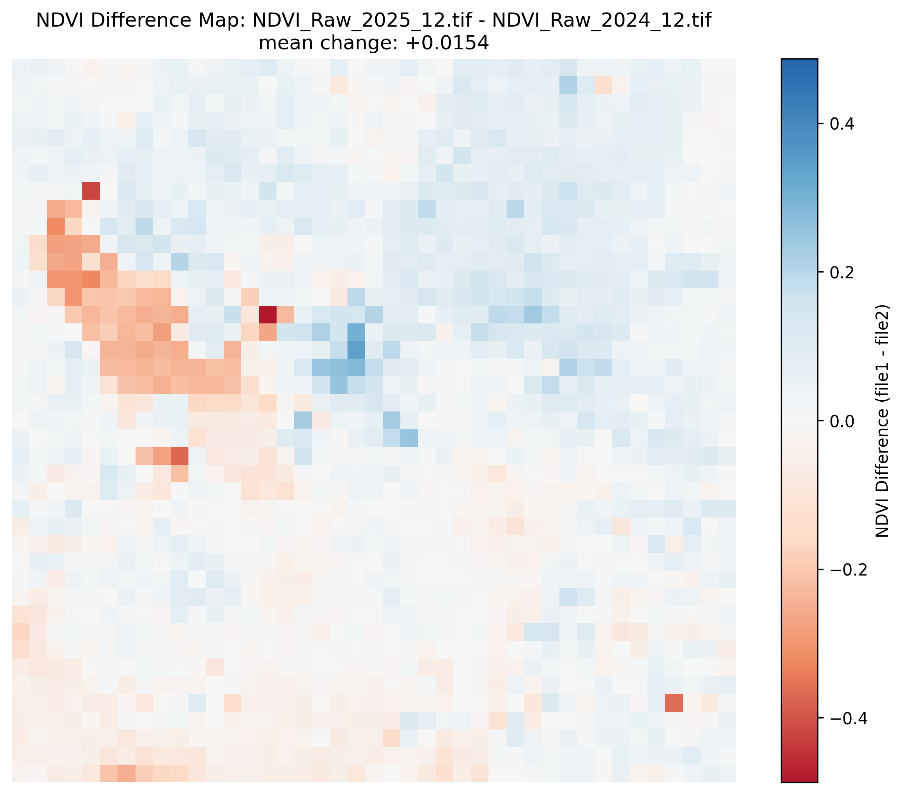
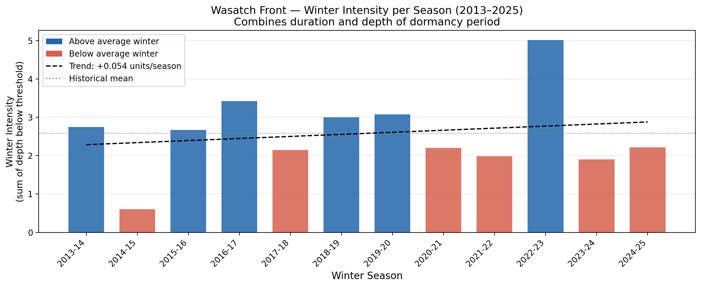
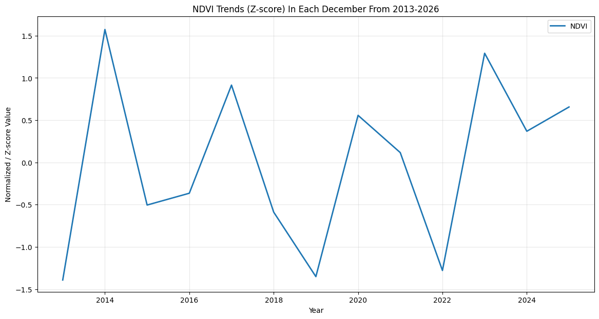
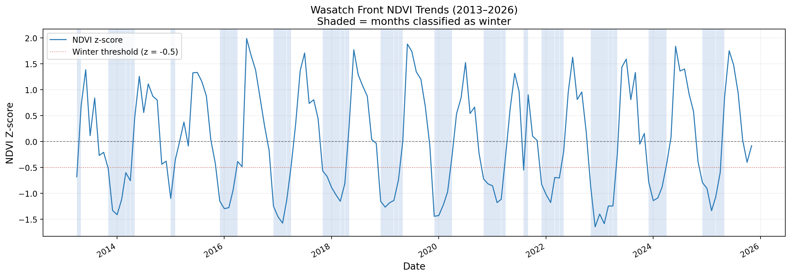

Monthly Report · Issue 01
December 2025
Vegetation dynamics across the Wasatch Front
By Scott Vars
Vegetation dynamics across the Wasatch Front
By Scott Vars
Raw vegetation index across the Wasatch Front for December 2025. Much of the Wasatch Front lay within the 0-0.3 range, with small, individual outliers at upwards of 0.4. The lake values (Great Salt Lake and Utah Lake), are both at 0 as normal. Winter NDVI values are inherently low across the region as we settle into winter.

NDVI was higher in December 2025 comparative to the historical average, seeing an increase of about +.023 in the mean NDVI for the month. We can see its a pretty blue sweep across the entire front, although there is a large red area around the Salt Lake Valley and Utah Lake areas. While this could be attributed to the little snow we received masking vegetation, it is more likely this was drought or stressed vegetation in the Valley as we received very little snow throughout December. The increase in vegetation in the mountainous areas is also concerning as this could mean we are having a later winter and more vegetation is peeking through what would otherwise be snowpack.
Typically, during winter months, NDVI is lower as plants start to stop photosynthesizing and began to be masked by snowpack. An increase in vegetation could be a warning signal of a later winter.

NDVI decreased very rapidly from November to December of 2025, with a mean change of -.061. While this may be seem like a concerning value, this is quite typical of what we see during October-December as plants stop photosynthesizing in preparation for winter, as stated above. This drops the NDVI significantly, but it is not usually a concern. Although, a decrease of .061 may seem to low, as typically during above average winters tend to be a decrease of greater than .1, although this is not completely indicative of a below-average winter as we have seen record breaking winters only have a decrease of .06-.07. For example, the 2022-2023 season only had a decrease from November 2022 to December 2022 of .066, which is right around this winter.
Overall, this map seems pretty normal and not super indicative of anything in particular.

The sharp increase over the actual lake area of the Great Salt Lake are likely due to remote sensing artifacts, so please disregard. They are likely not real readings and when looking at the raw NDVI maps, they did not change at all. Lake area is very consistently 0 NDVI.
Compared to December 2024, we saw a mean increase of about +.015, slightly higher than last year's December. We see the highest increases in the mountainous areas of the Front, while some of the Western, more arid parts of the Front including the Salt Lake Valley even had a slight decrease from last year. While the mountains had less snowpack, which could describe the increase in vegetation, the slight decrease in the Valley and more arid parts of the Front could be attributed to stressed vegetation due to drought and lack of precipitation. Lower-elevation areas throughout this month received little-to-no precipitation, which is unlike other Decembers which typically receive lots of precipitation in the form of snow, which could explain the decrease.

The next two figures provide a graph of past winter intensity and the NDVI z-scored values for the past Decembers. The winter intensity is measured by the winter dormancy metric, so whenever a z-scored value over the entire time-series is below -.5, that is considered a winter month. The sum of all values of the winter months is how we measure winter intensity. As we can see from the below graphs, a low value in December is correlated to a more intense winter, or in other words, a "better" winter. Typically, when the December Zscore, seen in figure 2, is below 0, the winter turns out to be above average. When the Zscore is above 0, this tends to turn out to be a below-average winter. We see that December 2025 has a Zscore value of .65-.75, which could be indicative of a below-average winter, although this is an extremely early and tentative estimate, with data only backing this up over thirteen years, so nothing is set in stone.



Despite seasonal expectations, NDVI was anomalously high compared to historical Decembers, driven not by healthy vegetation but by a conspicuous absence of snowpack. Mountain areas appeared greener than usual while valley and arid zones showed slight vegetation stress, a spatial divergence consistent with drought conditions at lower elevations and reduced snow cover at higher ones.
The December z-score of +0.65 to +0.75 placed this month among the most anomalously warm and dry December starts in the record, offering an early signal of the below-average winter that January and February would confirm. What the satellite saw in December 2025 looked less like the start of winter and more like a continuation of late autumn.
NDVI values derived from Landsat 8 TOA median composites at 5.5km resolution. Difference maps computed from raw NDVI prior to any normalization. Historical comparisons use the 2013–2026 Landsat archive.
Landsat 8/9 imagery courtesy of the U.S. Geological Survey via Google Earth Engine.
NOAA National Centers for Environmental Information, Monthly Climate Reports and drought summaries.